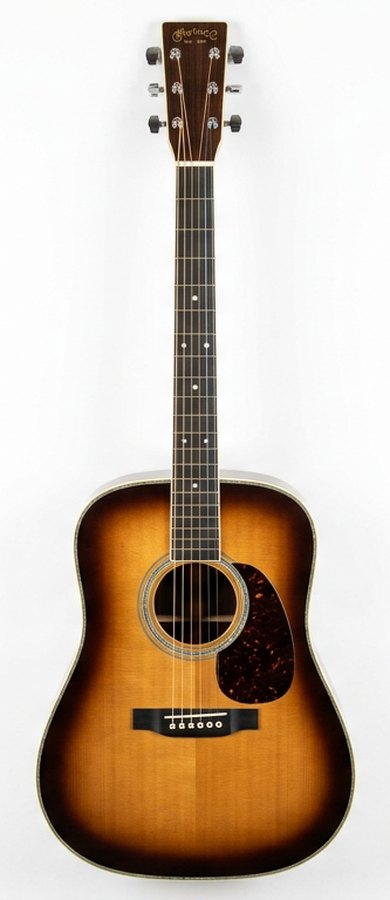

کوک استاندارد گیتار چیست؟
از سیم بم به زیر: E A D G B E. در بخش تیونر آنلاین صدای مرجع هر سیم را بشنوید و گیتارتان را کوک کنید.
گیتار را بچرخانید، رنگش را عوض کنید، سیمهایش را بنوازید و همه چیز را درباره محبوبترین ساز جهان بیاموزید.
شروع کاوش ↓هر گیتار شخصیت صوتی خودش را دارد. با خانواده گیتارها آشنا شوید.
روی هر قطعه کلیک کنید؛ در مدل سهبعدی بالا هم هایلایت میشود.

توضیحات کامل هر بخش از گیتار اینجا نمایش داده میشود.
سفری چند هزار ساله از سازهای زهی باستانی تا گیتارهای الکتریک مدرن.
روی هر سیم کلیک کنید تا نت مرجع را بشنوید و گیتارتان را کوک کنید. کوکهای مختلف را امتحان کنید.
نمودار آکوردهای پایه با انگشتگذاری و امکان شنیدن صدا.
مترونوم حرفهای: Tap Tempo، تقسیمبندی ضرب، تأکیدهای قابل تنظیم، ۴ صدا، تمرینگر سرعت و آونگ. (کلید Space = شروع/توقف)
۱۰ سؤال تصادفی از بانک ۱۰۰+ سؤالی؛ هر بار سؤالات جدید. پاسخ کامل به هر ۱۰ سؤال = جایزه 🎁
رتبهبندی عمومی همه کاربرانی که حساب ساختهاند و در آزمون شرکت کردهاند — از هر دستگاهی.
روی هر کارت کلیک کنید تا مدل سهبعدی به همان سبک تغییر کند.
با نمره ۱۰ از ۱۰ در آزمون، یکی از این دو جایزه بهصورت تصادفی برایتان باز میشود؛ با نمره کامل بعدی، جایزه دیگر هم باز میشود.
نسخه کامل آکورد + تب دو آهنگ محبوب برای تمرین.
نشان طلایی کنار نام شما در جدول برترینها و پروفایل نمایش داده میشود. هر بار نمره کامل، یک ستاره اضافه میشود.
نظر شما به بهتر شدن Guitar 3D کمک میکند. نتیجه همگانی و زنده است.
پاسخ کوتاه به رایجترین سؤالات درباره گیتار.
از سیم بم به زیر: E A D G B E. در بخش تیونر آنلاین صدای مرجع هر سیم را بشنوید و گیتارتان را کوک کنید.
کلاسیک سیم نایلونی و دسته پهنتر دارد و صدایی گرم میدهد؛ آکوستیک سیم فلزی دارد و درخشانتر و بلندتر است. برای مبتدیان کلاسیک راحتتر است.
Em، Am، C، G، D سادهترین آکوردهای باز هستند. در کتابخانه آکورد نمودار و صدای هر کدام را ببینید.
با مترونوم آنلاین از سرعت ۶۰ BPM شروع کنید و هر روز ۵ واحد بالاتر بروید. تمرین آهسته و دقیق، سریعترین راه پیشرفت است.
سر گیتار، گوشیهای کوک، شیطانک، دسته، فرتها، بدنه، دهانه صوتی/پیکاپها، خرک و سیمها. در بخش آناتومی گیتار هر قطعه را روی مدل سهبعدی ببینید.
بله؛ نمایش سهبعدی، تیونر، آکوردها، مترونوم و آزمون کاملاً رایگان و بدون نصب در مرورگر اجرا میشوند.